galleria | paesaggi
1932 - pianta grassa
Olio su tavola di compensato cm 48x38
Le forme sinuose del "Cereus flagelliformis " popolarmente noto come "Coda di topo" porgono soggetto per una stereometria pacatamente descrittiva in cui la scacchiera del pavimento individua una domestica quanto inattesa spazialità.
Olio su tavola di compensato cm. 30x40
Un punto d'arrivo per la pittura del primo periodo va considerato anche questo saggio di natura morta, genere fino ad allora poco frequentato; in cui l'artista riesce ad ottenere preziosi effetti descrittivi quali la vellutata consistenza superficiale dei malli con notevole padronanza cromatica unita ad una composta codificazione tonale per piani luminosi avvolgenti.
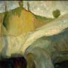
1956 - Le cave di Montiglio N° 1
Olio su foglio di masonite cm. 70x50
E' con questa veduta delle cave di gesso di Montiglio (in provincia di Asti) nota almeno in due versioni cromaticamente discordanti e sostanzialmente autonome fra loro che la pittrice avvia una revisione del dato paesaggistico ampiamente meditato nel corso nel successivo viaggio in Norvegia.
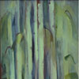
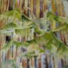
1959 - pineta
Tecnica mista su foglio di masonite cm. 57x48.
Ancora il tema della foresta, della monumentale fuga di tronchi tipica dei paesaggi del nord, modulata tuttavia da molli fronde di conifere offre un possibile aggancio con le suggestioni di un viaggio in Germania, nelle zone del Reno e della Mosella. effettuato nel 1958.
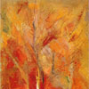
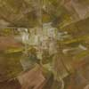
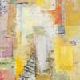
Tecnica mista su foglio di masonite cm.73x50.
Sorta di sublimazione di un paesaggio di grande fascino, codificato nel gioco di incastro dei settori dipinti e affiancati con sensibilità fantasiosa, il dipinto può essere considerato uno degli esempi più riusciti del periodo geometrico scompositivo.
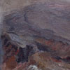
Tecnica mista su foglio eli masonite cm. 60x73.
Importante quadro nato sulla scorta emotiva delle visioni del cratere dell ' Etna direttamente osservato nel viaggio dell'anno precedente (giugno - luglio 1966) in Sicilia e in Sardegna. La materia pittorica si contorce e si impernia in un paesaggio drammatico di forze primigenie scatenate a plasmare la roccia fino a definire una visione disperata ed ammirata al tempo stesso della natura.
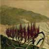
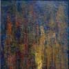
Acrilico su foglio di masonite cm. 125x93.
Ripresa pressoché puntuale di un analogo dipinto del 1963 che ripropone, quasi per contrasto col soggetto precedente, una materica astrazione della visione reale.
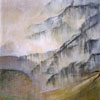
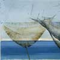
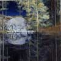
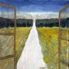
Olio su tela cm. 70x50.
Quasi in un presagio finale, la strada della vita si diparte rettilinea verso l'infinito naturale aprendo le clausure del quotidiano in una sostanziale dimensione di purezza esistenziale che la pittrice rivendica sensibilmente: dipinto di forte valenza simbolica e di notevole forza anche se incompiuto.